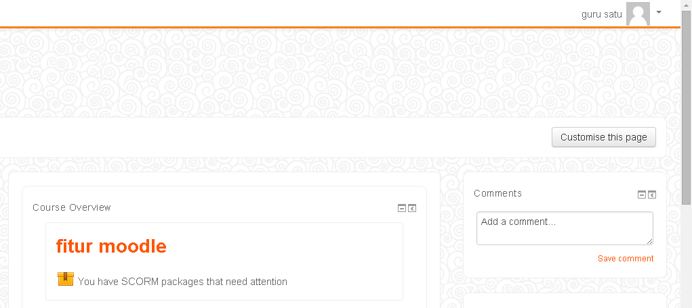
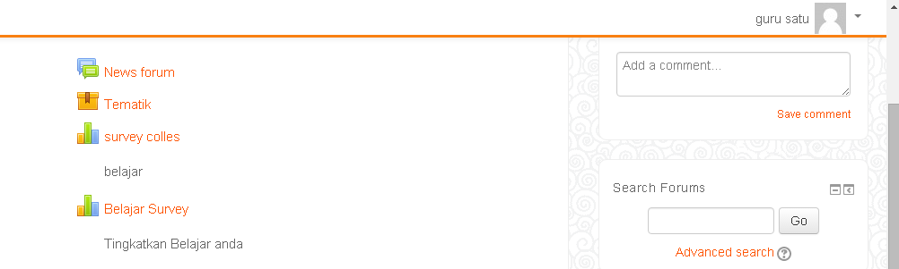
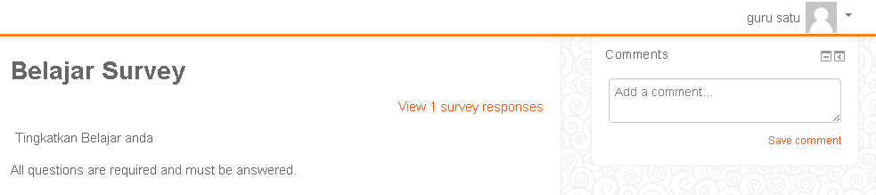
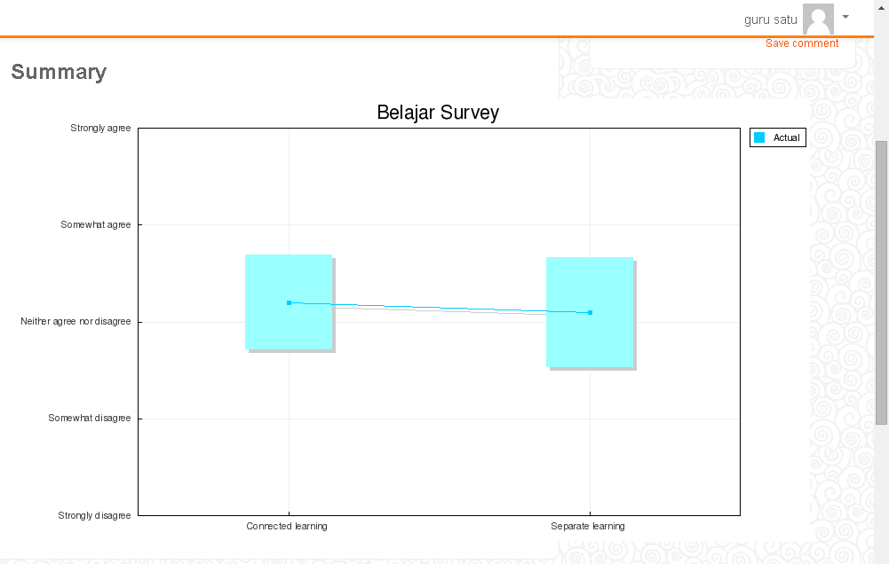

Cara Kerja Guru
Langkah awal dari admin adalah, admin harus melakukan log in terlebih dahulu, setelah itu baru admin bisa memilih menu dari fitur moodle.

Setelah memilih fitur moodle, kemudian pilih menu "Belajar Survey". Untuk langkah selanjutnya.

Setelah guru memilih menu "Belajar Survey", disitu guru akan mengetahui pemberitahuan "View 1 survey respons" yang menunjukkan bahwa ada satu siswa yang telah mengisi soal yang berupa kuisioner. Kemudian klik "View 1 survey respons", untuk mengetahui hasilnya.

Setelah memilih "View 1 survey respons" guru akan mengetahui hasil dari kuisioner berupa grafik, dan merupakan langkah yang terakhir, setelah itu log out admin.
